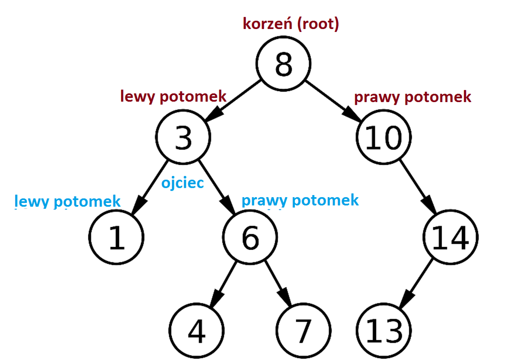

Moje zainteresowania związane z informatyką opierają się głównie o SQL i Javę. Zaczynając studia nie wiedziałam nic o programowaniu, a teraz uważam że mam małą, ale przydatną wiedzę, którą chętnie rozwijam.
Na studiach ze względu na dużą ilość materiału nie udało mi się napisac własnych programów, ale uważam że te co robiliśmy na zajęcia były równie ciekawe. Pisałam pogramy na przedmiotu typowo informatyczne, ale też na bardziej matematyczne.
Na pierwszym roku zaczynałam naukę programowania, więc moje projekty nie były bardzo rozbudowane, ale pomogły mi nauczyć się podstaw. Jednym z projektów, który wtedy zrealizowałam było przeszukiwanie drzew binarnych. Program umozliwiał stworzenie trzech drzew binarnych dla różnego typu danych. Na tym drzewie można było wykonywac różnego rodzaju operacje np. dodawanie i usuwanie elementu, czy zajdywanie elementu po jego wartości.
Pisałam również program wykorzystujący system operacyjny linux odczytywania różnych informacji o nim oraz procesach, które w trakcie pracy komputera się wykonują. Wykorzystywana była do tego powłoka bash.
Jednym z projektów na przedmiot matematyczny był program pozwalający obliczać różne wartości dowolnych funckji w zależności od podanych wartości. W moim programie były 3 funckje, natomiast w każdej chwili można było ich dodać więcej.
Projektem, który najbardziej mnie zainteresował było pisanie kwerend do bazy danych. Jest to bardzo logiczne, dlatego mi się spodobalo. Pisaliśmy różne zapytania, funkcje, triggery itp pozwalające wydobyć każdą informacje z danej bazy danych.
Największym projektem jaki do tej pory realizowałam był na 3 semestrze. Razem z koleżanką stworzyłyśmy aplikację do gry w warcaby. Program umożliwiał grę w aż 3 różnych trybach.